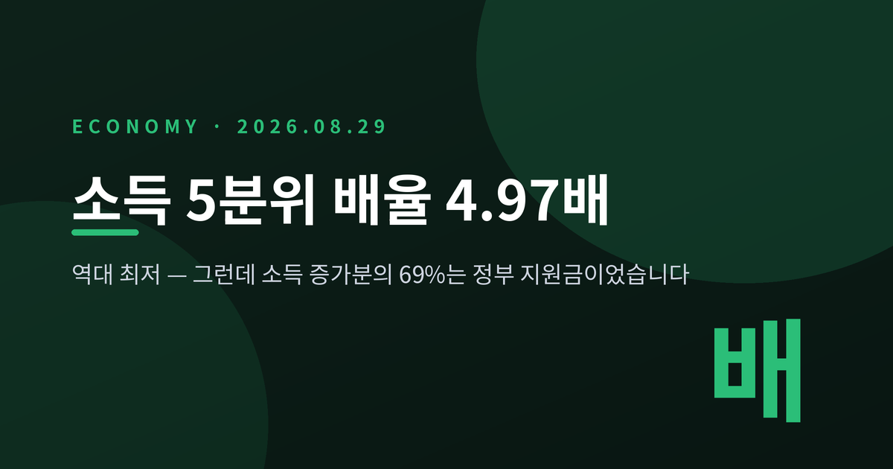
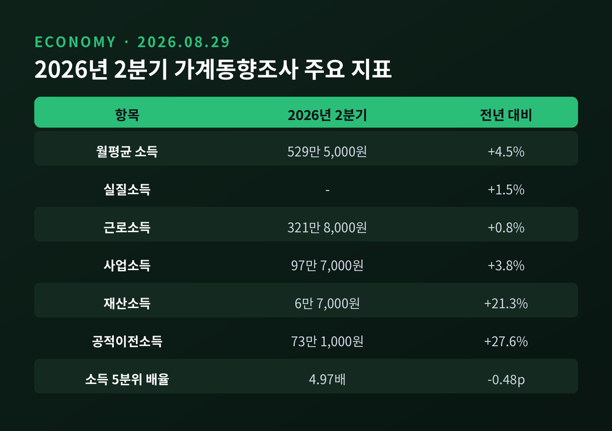
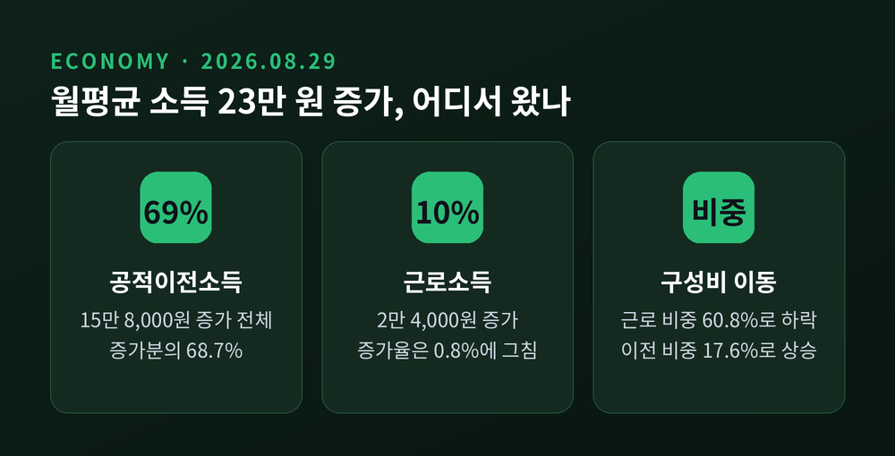
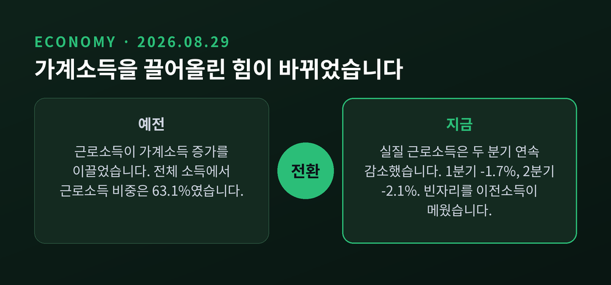
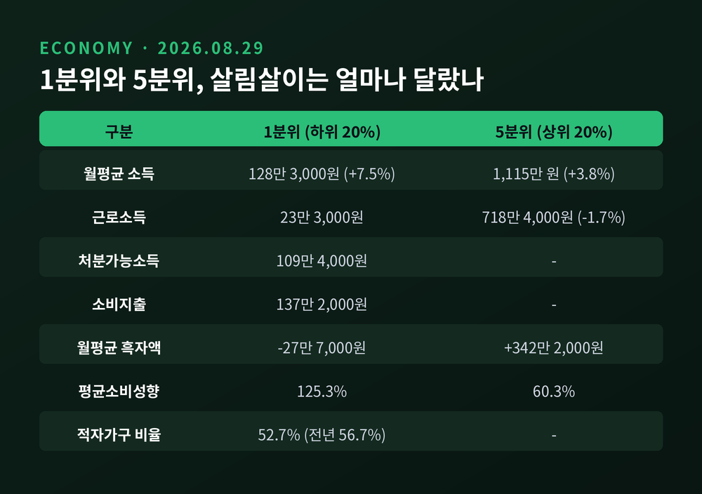
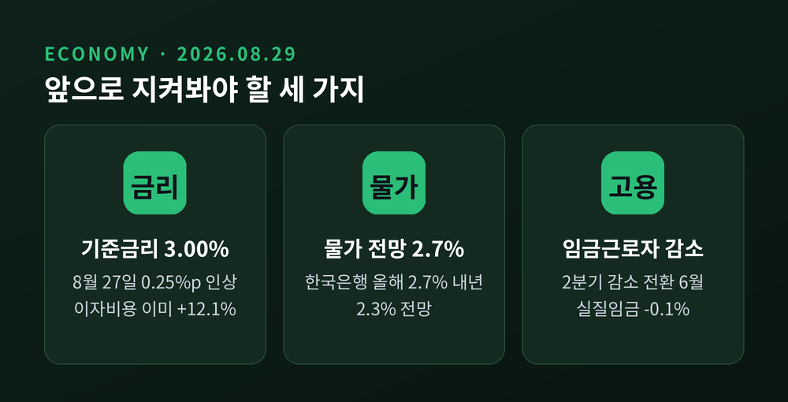

소득 5분위 배율 4.97배 역대 최저, 증가분 69%는 정부 지원금
이번 글에서는 2026년 2분기 가계동향조사 결과를 정리해 보겠습니다. 소득 격차를 보여주는 5분위 배율이 4.97배까지 내려가 역대 최저 수준을 기록했습니다. 숫자만 보면 더없이 반가운 소식입니다만, 안을 들여다보면 이야기가 조금 달라집니다.

4.97배, 어디까지 내려왔나
국가데이터처가 2026년 8월 27일 낮 12시에 「2026년 2분기 가계동향조사 결과」를 공표했습니다. 조사 대상은 전국 1인 이상 가구, 기간은 올해 4월부터 6월까지입니다.
가장 눈에 띄는 숫자는 균등화 처분가능소득 기준 소득 5분위 배율입니다. 4.97배로 집계됐습니다. 지난해 2분기 5.45배에서 0.48배포인트 낮아진 값입니다.
5분위 배율은 상위 20% 가구의 처분가능소득을 하위 20% 가구의 처분가능소득으로 나눈 값입니다. 가구원 수에 따른 생활비 차이까지 보정해 계산합니다. 배율이 낮을수록 위아래 격차가 작다는 뜻입니다.
전체 가구의 월평균 소득은 529만 5,000원이었습니다. 1년 전 506만 5,000원에서 23만 원, 4.5% 늘었습니다. 다만 물가를 반영한 실질소득 증가율은 1.5%에 머물렀습니다. 2분기 물가가 3.0% 올랐기 때문입니다.

소득은 늘었는데, 어디서 늘었나
소득 항목을 하나씩 뜯어보면 그림이 선명해집니다.
근로소득은 321만 8,000원으로 0.8% 늘었습니다. 사업소득은 97만 7,000원으로 3.8%, 재산소득은 6만 7,000원으로 21.3% 증가했습니다. 그리고 이전소득이 93만 1,000원으로 20.4% 뛰었습니다.
이 가운데 공적이전소득이 57만 3,000원에서 73만 1,000원으로 27.6% 급증했습니다. 공적연금과 기초연금, 사회수혜금, 연말정산 환급금 등을 묶은 항목입니다.
여기서 계산이 하나 나옵니다. 전체 소득은 1년 새 23만 원 늘었는데, 그중 공적이전소득 증가액이 15만 8,000원입니다. 전체 증가분의 약 68.7%, 그러니까 열에 일곱 가까이가 나랏돈에서 나온 셈입니다. 같은 기간 근로소득 증가액은 2만 4,000원에 그쳤습니다.
소득 구성비도 함께 움직였습니다. 전체 소득에서 근로소득이 차지하는 비중은 63.1%에서 60.8%로 2.3%포인트 낮아졌습니다. 반대로 이전소득 비중은 15.3%에서 17.6%로 그만큼 올라갔습니다.

고유가 피해지원금이 통계에 들어온 방식
증가의 정체는 고유가 피해지원금입니다. 정부가 추가경정예산으로 편성해 올해 4월부터 지급한 한시 지원금입니다. 소득과 거주지역에 따라 1인당 10만 원에서 60만 원까지 지급됐습니다.
이 돈은 가계동향조사에서 공적이전소득 안의 '사회수혜금'으로 잡혔습니다. 지급 시기가 4월부터였으니 2분기 통계에 온전히 반영됐습니다.
박순옥 국가데이터처 가계수지동향과장은 지원금이 모든 소득분위에 영향을 줬고 특히 1분위 소득 증가에 많은 영향을 미쳤다고 설명했습니다. 재정경제부도 지원금 지급이 5분위 배율 개선에 영향을 미쳤다고 평가했습니다.
다만 박 과장은 단서를 하나 달았습니다. 고유가 피해지원금은 건강보험료를 기준으로 지급돼, 가계동향조사의 소득분위와 지원 대상이 정확히 일치하지는 않는다는 것입니다. 지원금이 하위 20%에만 정밀하게 꽂힌 것은 아니라는 뜻입니다.
격차가 좁아진 또 하나의 이유
분배지표가 좋아지는 길은 두 갈래입니다. 아래가 올라오거나, 위가 덜 자라거나.
이번에는 두 힘이 함께 작동했습니다. 소득 하위 20%인 1분위 가구의 월평균 소득은 128만 3,000원으로 7.5% 늘었습니다. 반면 상위 20%인 5분위 가구는 1,115만 원으로 3.8% 증가하는 데 그쳤습니다. 5분위의 근로소득은 718만 4,000원으로 오히려 1.7% 줄었습니다.
즉 배율이 낮아진 데에는 저소득층 소득이 늘어난 효과뿐 아니라, 고소득층 근로소득이 뒷걸음질한 효과도 섞여 있습니다. 이 대목은 마냥 반길 일만은 아닙니다.
근로소득의 약세는 전체 가구에서도 확인됩니다. 명목 근로소득은 0.8% 늘었지만 물가 상승률 3.0%에는 못 미쳤습니다. 물가를 반영한 실질 근로소득은 2.1% 감소했습니다. 1분기 마이너스 1.7%에 이어 두 분기 연속 뒷걸음입니다.
국가데이터처는 두 가지를 원인으로 꼽았습니다. 1분기에 둔화하던 임금근로자 수 증가 폭이 2분기에는 감소로 돌아섰다는 점, 그리고 사업체의 임금 상승률이 둔화했다는 점입니다.
예전에는 가계소득을 근로소득이 끌었습니다. 지금은 이전소득이 그 자리를 대신하고 있습니다.

1분위는 여전히 매달 28만 원 적자입니다
분배지표가 좋아졌다고 저소득층 살림이 펴진 것은 아닙니다.
1분위 가구의 월평균 처분가능소득은 109만 4,000원이었습니다. 그런데 소비지출이 137만 2,000원입니다. 월평균 흑자액은 마이너스 27만 7,000원, 매달 약 28만 원씩 적자를 냈습니다. 평균소비성향은 125.3%였습니다. 쓸 수 있는 돈 100만 원당 125만 3,000원을 썼다는 의미입니다.
1분위 적자가구 비율은 1년 전 56.7%에서 52.7%로 낮아졌습니다. 개선은 됐지만 여전히 절반을 넘습니다.
지출 구성은 더 무겁습니다. 1분위의 식료품·비주류음료 지출은 28만 9,000원, 주거·수도·광열비는 27만 원으로 6.5% 늘었습니다. 음식·숙박은 18만 7,000원으로 15.0%, 보건은 16만 7,000원으로 13.5% 증가했습니다. 이 네 항목을 합치면 91만 3,000원, 전체 소비지출의 66.5%입니다.
필수 지출이 불어난 만큼 다른 곳이 줄었습니다. 1분위의 교육비는 21.2%, 오락·문화비는 8.7%, 정보통신비는 5.1% 감소했습니다. 먹고 살 것을 먼저 채우고 나면 아이 학원비에 쓸 여력이 남지 않는 구조입니다.
같은 분기 5분위 가구는 월평균 342만 2,000원의 흑자를 냈습니다. 평균소비성향은 60.3%로 1분위의 절반 수준이었습니다. 지원금이 격차의 배율은 줄였지만, 살림의 질까지 좁히지는 못했습니다.

'역대 최저'의 기준이 매체마다 다릅니다
한 가지 짚고 넘어갈 점이 있습니다. 4.97배를 두고 보도 기준이 갈립니다.
서울경제와 헤럴드경제는 "현행 조사 방식이 적용된 2019년 통계 개편 이후 최저"라고 썼습니다. 반면 더퍼블릭, 시사뉴스 등은 "2006년 관련 통계 작성 이후 최저"라고 보도했습니다.
가계동향조사는 2019년에 표본과 조사 방식이 개편돼 그 이전 시계열과 단순 비교가 어렵습니다. 보수적으로 보면 '현행 방식 기준 최저', 넓게 보면 '통계 작성 이래 최저'가 됩니다. 어느 기준을 쓰든 역대 최저 수준이라는 사실 자체는 바뀌지 않습니다만, 인용하실 때는 기준을 함께 밝히시는 편이 정확합니다.
낙관과 신중, 두 갈래 해석
이번 지표를 읽는 시선은 둘로 갈립니다.
긍정적으로 보는 쪽의 근거는 분명합니다. 이유가 무엇이든 하위 20%의 실제 가처분소득이 7.5% 늘었습니다. 적자가구 비율도 4.0%포인트 낮아졌습니다. 실질소득과 실질소비지출이 나란히 플러스를 유지했고, 가계소득은 12분기 연속 상승 흐름을 이어갔습니다. 재정이 의도한 방향으로 작동했다는 증거로 볼 만합니다.
신중론의 근거도 만만치 않습니다. 2분기는 1분기에 몰리는 상여금과 성과급이 빠지는 시기라, 계절적으로 5분위 배율이 낮게 나오는 분기입니다. 여기에 고유가 피해지원금이라는 한시적 요인까지 겹쳤습니다. 무엇보다 실질 근로소득이 두 분기 연속 줄었고 임금근로자 수마저 감소로 돌아섰습니다. 소득의 토대 자체는 약해지고 있습니다.
국가데이터처의 입장도 신중한 쪽에 가깝습니다. 박순옥 과장은 지원금이 1분위 소득 증가에 영향을 미친 것은 분명하지만 5분위 배율 개선이 추세적으로 이어질지는 지켜봐야 한다고 말했습니다. 연간 소득 수준과 분배 상황은 행정자료로 보완한 가계금융복지조사를 활용할 필요가 있다는 설명도 덧붙였습니다.
앞으로 무엇을 봐야 하나
세 가지 변수가 남아 있습니다.
첫째는 금리입니다. 가계동향조사가 발표된 바로 그날, 한국은행 금융통화위원회는 기준금리를 연 2.75%에서 3.00%로 0.25%포인트 올렸습니다. 전체 가구의 이자비용은 이미 14만 3,000원으로 12.1% 늘어난 상태입니다. 변동금리 대출을 쓰는 저소득 가구의 부담이 더 커질 수 있습니다. 대출금리 상승은 빠르게 반영되지만 물가 안정 효과는 시차를 두고 나타납니다.
둘째는 물가입니다. 한국은행은 물가상승률을 올해 2.7%, 내년 2.3%로 전망했습니다. 명목소득이 늘어도 실질 구매력이 따라오지 못하면 지표 개선은 체감으로 이어지지 않습니다.
셋째는 고용입니다. 임금근로자 수가 감소로 전환한 흐름이 이어질지가 근로소득 회복의 관건입니다. 참고로 고용노동부 사업체노동력조사에서도 6월 1인당 실질임금은 341만 2,000원으로 1년 전보다 0.1% 줄었습니다. 실질임금은 4월부터 석 달 연속 감소했습니다.
내년 2분기에 고유가 피해지원금 같은 지급이 반복되지 않는다면, 기저효과만으로도 5분위 배율은 다시 올라갈 수 있습니다. 이번 4.97배가 출발점인지 예외인지는 다음 몇 분기가 말해줄 것입니다.

정리하면 이렇습니다.
2026년 2분기 소득 5분위 배율 4.97배는 분명한 개선입니다. 다만 그 개선을 만든 힘의 대부분은 한 번 지급된 나랏돈이었고, 정작 일해서 버는 소득은 물가를 이기지 못했습니다.
"지표가 좋아진 것과 살림이 나아진 것은 다른 이야기입니다."
숫자가 좋아졌으니 안심해도 되겠냐고 물으신다면, 저는 아직은 아니라고 답하겠습니다. 다음 분기 근로소득 항목을 먼저 확인해 보시길 권합니다.
※ 이 글은 공개된 통계와 언론 보도를 정리한 경제 뉴스 해설이며, 투자 권유가 아닙니다. 투자 판단과 그에 따른 책임은 투자자 본인에게 있습니다.